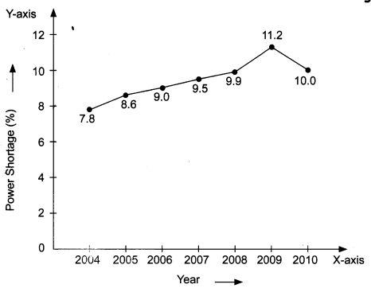
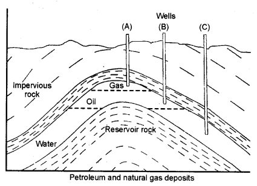
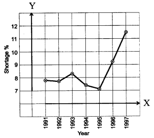
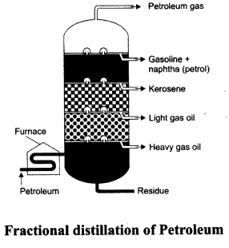

NCERT Solutions for Class 8 Science Chapter 5 Materials Coal and Petroleum
Topics and Sub Topics in Class 8 Science Chapter 5 Materials Coal and Petroleum:
| Section Name | Topic Name |
| 5 | Materials Coal and Petroleum |
| 5.1 | Coal |
| 5.2 | Petroleum |
| 5.3 | Natural Gas |
| 5.4 | Some Natural Resources are Limited |
Coal and Petroleum Class 8 Science NCERT Textbook Questions
Question 1.
What are the advantages of using CNG and LPG as fuels?
Answer:
The advantages of using CNG and LPG as fuels are:
- They burn with a smokeless flame and so does not cause any pollution.
- They leave no ash on burning.
- They are easy to handle and convenient to store.
Question 2.
Name the petroleum product used for surfacing of roads.
Answer:
Bitumen
Question 3.
Describe how coal is formed from dead vegetation. What is this process called?
Answer:
Millions of years ago, trees, plants, ferns and forests got buried below the rocks, soil and sand due to natural processes like flooding, earthquake, etc. Slowly, as more soil deposited over them, they were compressed. This led to the conditions of high pressure and heat. These conditions along with the anaerobic conditions turned the carbon-enriched organic matter of wood into coal.
This slow process of conversion of wood into coal is called carbonisation.
Question 4.
Fill in the blanks.
(a) Fossils fuels are ____ , ____ and ____
(b) Process of separation of different constituents from petroleum is called ______
(c) Least polluting fuel for vehicle is ______
Answer:
(a) coal, petroleum, natural gas
(b) refining
(c) CNG
Question 5.
Tick True/False against the following statements.
(a) Fossil fuels can be made in the laboratory.
(b) CNG is more polluting fuel than petrol.
(c) Coke is an almost pure form of carbon.
(d) Coal tar is a mixture of various substances.
(e) Kerosene is not a fossil fuel.
Answer:
(a) False
(b) False
(c) True
(d) True
(e) False
Question 6.
Explain why fossil fuels are exhaustible natural resources.
Answer:
Fossil fuels take millions of years to be formed. They are limited in nature and cannot be replenished easily, once consumed. Hence, they are considered as exhaustible natural resources.
Question 7.
Describe the characteristics and uses of coke.
Answer:
Characteristics of coke: Coke is 98% pure carbon. It is a tough, porous and black substance. It pro-duces a very little smoke.
Uses of coke: Coke is very useful as fuel. It is a good reducing agent. It is widely used in metallurgical processes to reduce metals from their oxides. It is used for producing water gas.
Question 8.
Explain the process of the formation of petroleum.
Answer:
Petroleum is formed by the burial of aquatic plants and animals below the sea bed. The marine animals and plants died thousands of years ago and settled down in the bottom of sea. In anaerobic conditions, microorganisms decompose this organic matter. Due to high pressure and heat, the dead remains of tiny plants and animals were slowly converted into petroleum.
Question 9.
The following table shows the total power shortage in India from 2004-2010. Show the data in the form of a graph. Piet shortage percentage for the years on the y-axis and the year on the x-axis.
| S. No. | Year | Shortage (%) |
| 1 | 2004 | 7.8 |
| 2 | 2005 | 8.6 |
| 3 | 2006 | 9.0 |
| 4 | 2007 | 9.5 |
| 5 | 2008 | 9.9 |
| 6 | 2009 | 11.2 |
| 7 | 2010 | 10.0 |
Answer:

Coal and Petroleum Class 8 Science NCERT Intext Activities Solved
Activity 1 (NCERT Textbook, Page 56)
Make a list of various materials used by us in daily life and classify them as natural and man-made.
Solution:
| Natural | Man-made |
| Air | Clothes |
| Sunlight | Plastics |
| Water | Fan |
| Minerals | Cement |
| Forests | Cosmetics |
Activity 2 (NCERT Textbook, Page 56)
Take some containers. Fill them with popcorn/peanuts/roasted gram/tof¬fees. Divide students into groups of seven each. Further divide each group into three subgroups containing 1, 2 and 4 students. Label them as first, second and third generation respectively.
These sub-groups represent the consumers. As population is growing, second and third generations have larger number of consumers.
Put one full container for each group on a table. Ask consumers of the first generation from each group to consume eatables from the container of their group. Now, ask the second generation consumers from each group to do the same. Ask students to observe carefully the availability of eatables in each container. If something is left in the containers, ask third generation from each group to consume it. Now, finally observe whether all the consumers of the third generation got the eatables or not. Also observe if anything is still left in any of the containers.
Solution:
Students should perform this activity themselves in their classroom.
NCERT Solutions for Class 8 Science Chapter 5 – 1 Mark Questions and Answers
Question 1.
Name the petroleum product used for surfacing of roads. [NCERT]
Answer:
Bitumen.
Question 2.
What is the slow process of conversion of dead vegetation into coal called ?
Answer:
Carbonisation.
Question 3.
Fill in the blanks : [NCERT]
- Fossil fuels are ……, ……. and ……..
- Process of separation of different constituents from petroleum is called ………
- Least polluting fuel for vehicle is ………..
Answer:
- coal, petroleum, natural gas
- refining
- CNG.
Question 4.
Tick True/False against the following statements : [NCERT]
- Fossil fuels can be made in the laboratory. (T/F)
- CNG is more polluting fuel than petrol. (T/F)
- Coke is almost pure form of carbon. (T/F)
- Coal tar is a mixture of various substances. (T/F)
- Kerosene is not a fossil fuel. (T/F)
Answer:
- False
- False
- True
- True
- False
Question 5.
Explain why fossil fuels are exhaustible natural resources. [NCERT]
Answer:
Fossil fuels are exhaustible natural resources because they will be exhausted by human activities as they are limited in nature.
Question 6.
What are natural resources ?
Answer:
Material obtained from nature are called natural resources.
Question 7.
Classify the following as exhaustible and inexhaustible natural resources- air, sunlight, water, forests, wildlife, coal.
Answer:
Exhaustible resources – forests, wildlife, coal
Inexhaustible resources – air, sunlight, water.
Question 8.
Define carbonisation.
Answer:
The slow process of conversion of dead vegetation into coal is called carbonisation.
Question 9.
What name is given to the process of heating a substance in absence of air ?
Answer:
Destructive Distillation.
Question 10.
How is coke obtained ?
Answer:
Coke is obtained by heating coal in the absence of air.
Question 11.
How is coal tar formed ?
Answer:
When destructive distillation of coal is done, the vapours which condense in the water form coal tar.
Question 12.
Why is petroleum called a fossil fuel ?
Answer:
Petroleum is called a fossil fuel as it is obtained from the bodies of dead organisms.
Question 13.
How is natural gas formed ?
Answer:
Natural gas is formed below the earth’s surface. It is formed above the petroleum.
NCERT Solutions for Class 8 Science Chapter 5 – 2 Mark Questions and Answers
Question 1.
Write down any four amorphous forms of carbon. [KVS 2008]
Answer:
Amorphous forms of carbon – coal, charcoal, coke and lamp black.
Question 2.
Explain the process of formation of petroleum ? Name two places in India where it is found.
Answer:
Petroleum is formed by the decomposition of aquatic plants and animal remains. In India, petroleum is obtained from oil wells in Assam and Bombay High.
Question 3.
Distinguish between inexhaustible and exhaustible natural resources.
Answer:
Exhaustible resources – forests, wildlife, coal
Inexhaustible resources – air, sunlight, water.
Question 4.
Why are coal and petroleum known as fossil fuels ?
Answer:
Coal and petroleum are formed from the dead remains of living organisms that is why they are called fossils fuels.
Question 5.
Give two characteristics of coal.
Answer:
Coal is hard and is of black in colour.
Question 6.
Define destructive distillation. Name the residue formed by destructive distillation of coal.
Answer:
Destructive distillation is the process of heating a substance in absence of air. Coke is formed by destructive distillation of coal.
Question 7.
What is meant by refining of petroleum and where is it done ?
Answer:
The process of separating the different fractions of petroleum is known as refining and it is carried out in a refinery.
Question 8.
Give two uses of diesel.
Answer:
Diesel is used as fuel for heavy motor vehicles and in electric generators.
Question 9.
How can petrol be used ?
Answer:
Petrol can be used as a motor fuel, aviation fuel and as solvent for dry cleaning.
Question 10.
How can bitumen be used ?
Answer:
Bitumen can be used for making paints and for surfacing the roads.
Question 11.
Why is petroleum also knbwn as ‘black gold’ ?
Answer:
Due to its great commercial importance, petroleum is known as ‘black gold’.
Question 12.
Can we make coal and petroleum in the laboratory from dead organisms ?
Answer:
No, their formation is a very slow process and conditions for their formation cannot be reached in the laboratory.
Question 13.
Give two disadvantages of using fossil fuels.
Answer:
Fossil fuels cause air pollution and global warming.
Question 14.
Why should the fossil fuels be used with care ?
Answer:
If we use fossil fuels carefully, it will result in better environment, less risk of global warming and they will be available for a longer period.
Question 15.
What is meant by fractional distillation ? What is the principle on which it is based ?
Answer:
Petroleum is mixture of various hydrocarbons having different boiling points. As the number of carbon atoms increase, the boiling point also increases. This property is used to separate the different components of petroleum and is known as fractional distillation.
Question 16.
Name some places in India where natural gas has been found.
Answer:
In India natural gas is found in Tripura, Jaisalmer and in the offshore of Mumbai and in Krishna Godavari delta.
Question 17.
Give two advantages of judicious use of energy ?
Answer:
The advantages of judicious use of energy are :
- It will delay the energy crisis.
- It will give the scientists more time to develop more efficient alternate sources of energy.
NCERT Solutions for Class 8 Science Chapter 5 – 3 Mark Questions and Answers
Question 1.
Define the term fossil fuel. Name two fossil fuels. [KVS 2008, 2005]
Answer:
Fossil fuels are formed from dead remains of living matter over millions of years when they remained buried under the earth. Coal and petroleum are two fossil fuels.
Question 2.
State one use of each of the following : [KVS 2007]
- Charcoal
- Bone Charcoal
- Coke.
Answer:
Use:
- Charcoal : Fuel.
- Bone Charcoal : Purification of brown coloured sugarcane juice in the manufacture of sugar.
- Coke : Used as a reducing agent in the extraction of metals.
Question 3.
- Name the products obtained when coal is heated in the absence of air.
- Write any two uses of its products. [MSE (Chandigarh) 2007]
Answer:
- Coke is formed when coal is heated in absence of air.
- Coke is used :
- As a fuel.
- As a reducing agent in the extraction of metals.
Question 4.
(a) Give the full form of
(i) LPG
(ii) CNG.
(b) How is petroleum gas obtained ? [MSE (Chandigarh) 2007]
Answer:
(a) (i) LPG — Liquefied Petroleum Gas.
(ii) CNG — Compressed Natural Gas.
(b) Petroleum gas is obtained during fractional distillation of petroleum.
Question 5.
Draw diagram to show petroleum and natural gas deposit.
Answer:

Question 6.
What are ‘Petrochemicals’ ? Give the uses of petrochemicals obtained from petroleum.
Answer:
Petrochemicals are useful substances obtained from petroleum. They are used in the manufacture of detergents, fibres, polyethylene and other plastics.
Question 7.
Name some places where natural gas is found in India. How many reserves are of natural gas ?
Answer:
In India, natural gas has been formed in Tripura, in the Krishna Godavari delta. In India, there are over 100 billion cubic metre reserves of natural gas.
Question 8.
Describe characteristics and uses of coke.
Answer:
Characteristics of coke are :
- it is tough.
- it is porous
- it is pure form of carbon.
Coke is used for extraction of metals and in the manufacture of steel.
NCERT Solutions for Class 8 Science Chapter 5 – 5 Mark Questions and Answers
Question 1.
- What is CNG ? Give its one use.
- From which natural substance are liquid fuels formed ?
- Which gas is the main constituent of LPG ?
- How was petroleum formed in nature ?
- Why do green leaves not catch fire easily ? [DAV2007]
Answer:
- CNG — Compressed Natural Gas. It is used as a fuel.
- All liquid fuels are formed from petroleum.
- Butane is the main constituent of LPG.
- Petroleum was formed by the sedimentation of dead remains of microscopic marine plants and animals, which were buried under the surface of the earth, millions of years ago.
- Green leaves do not catch fire easily because they contain moisture.
Question 2.
- How have fossil fuels been formed ?
- Why are fossil fuels non-renewable sources of energy ?
- Why is smelling agent added to LPG ?
- Give one reason why LPG is a better fuel than coal.
- Give one advantage of modem chullah over traditional chullah. [DAV 2006]
Answer:
- They have been formed by decomposition of pre-historic plants and animals buried under the Earth’s crust millions of years ago.
- Fossil fuels are non-renewable sources of energy because once exhausted they cannot be re-created in a short period of time.
- Smelling agent is added to LPG to detect the leakage of gas as LPG is colourless and odourless gas.
- LPG is a better fuel than coal because :
- It does not cause pollution.
- It has high calorific value.
- It has low ignition temperature. (Any one)
- Advantages of Modem Chullah over Traditional Chullah :
- High efficiency.
- Causes less pollution.
- Consumes less fuel.
Question 3.
The following table shows the total power shortage in India from 1991-1997. Show the data in the form of a graph. Plot shortage percentage for the years on Y-axis and the year on the X-axis. [NCERT]
| S. No. | Year | Shortage (% age) |
| 1 | 1991 | 7.9 |
| 2 | 1992 | 7.8 |
| 3 | 1993 | 8.3 |
| 4 | 1994 | 7.4 |
| 5 | 1995 | 7.1 |
| 6 | 1996 | 9.2 |
| 7 | 1997 | 11.5 |
Answer:

Question 4.
Name the agency in India who advises people how to save petrol/diesel. What tips are given by them ?
Answer:
In India, the Petroleum Conservation Research Association (PCRA) advises people how to save petrol/diesel while driving.
Their tips are :
- Drive at a constant and moderate speed.
- Switch off the engine at traffic lights.
- Ensure correct tyre pressure.
- Ensure regular maintenance of the vehicle.
Question 5.
Draw a labelled diagram showing the fractional distillation of petroleum. Give the uses of any three fractions.
Answer:

Uses:
- Petrol is used as motor fuel, airation fuel and as solvent for drycleaning.
- Kerosene is used as fuel at home and in jet aircrafts.
- Diesel is used as fuel for heavy motor vehicles and electric generators.
NCERT Solutions for Class 8 Science Chapter 5 MCQs
Question 1.
Wind, sun and hydropower are
(a) renewable
(b) non-renewable
(c) synthetic sources
(d) none of these .
Answer:
(a)
Question 2.
The unit of calorific value of combustion of fuels is
(a) kilojoule
(b) joule
(c) kilojoule/kilogram
(d) kilogram
Answer:
(c)
Question 3.
A brownish-black sedimentary rock is known as
(a) charcoal
(b) coke
(c) coal
(d) coal tar
Answer:
(c)
Question 4.
Peat is a type of
(a) charcoal
(b) coke
(c) coal
(d) none of these
Answer:
(c)
Question 5.
The most pure form of carbon fuel is
(a) coal
(b) coke
(c) charcoal
(d) coal gas
Answer:
(b)
Question 6.
The fossil fuel found below the sea is
(a) petrol
(b) petroleum
(c) kerosene
(d) diesel
Answer:
(b)
Question 7.
‘Black gold’ is another name for
(a) coal
(b) coke
(c) charcoal
(d) petroleum
Answer:
(d)
Question 8.
The white semi-solid fraction of petroleum used for making vaseline is
(a) asphalt
(b) lubricating oil
(c) paraffin wax
(d) fuel oil
Answer:
(c)
Question 9.
Out of the following, which fuel is best used in the homes ?
(a) Wood
(b) CNG
(c) LPG
(d) Kerosene oil
Answer:
(c)
More CBSE Class 8 Study Material
- NCERT Solutions for Class 8 Maths
- NCERT Solutions for Class 8 Science
- NCERT Solutions for Class 8 Social Science
- NCERT Solutions for Class 8 English
- NCERT Solutions for Class 8 English Honeydew
- NCERT Solutions for Class 8 English It So Happened
- NCERT Solutions for Class 8 Hindi
- NCERT Solutions for Class 8 Sanskrit
- NCERT Solutions